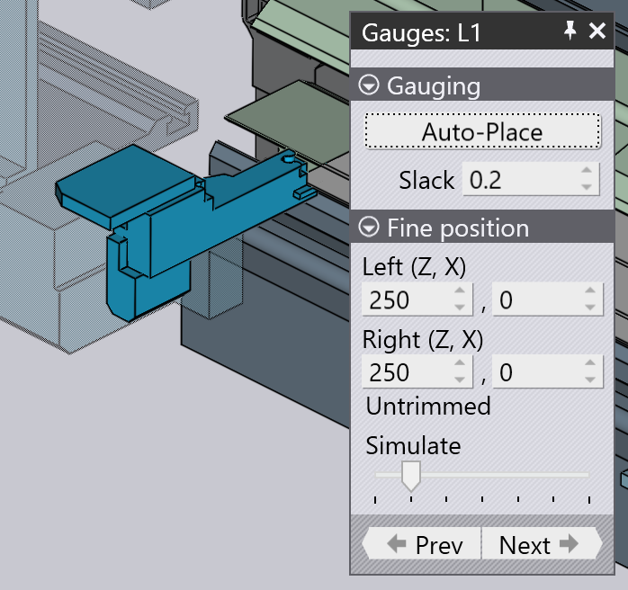

編輯止擋
每個邊（或區域）的第一個折彎需要根據_後定規_調基準，以便零件在被零件機械手夾持之前準確定位。對於手動機台，止擋移動到板坯支架後的位置，操作員對零件調基准 them[1].

如要打開止擋面板：
-
選擇邊的第一個折彎。當止擋在模擬中可見時，點擊它們。
-
打開導航器，然後點擊止擋單元。止擋面板有幾個操作和設定：
-
Auto Place 設置用於計算用於止擋的自動位置。當您切換到折彎模式面板時，所有邊都會執行此操作。但是，在您手動將止擋移動到不同位置時，此按鈕可用於重設回預設位置。此外，TecZone Fold還會計算止擋的一組可能位置，每次點擊此按鈕，它會顯示止擋的下一個可行位置（可能繞到第一個位置）。
-
Slack 設置是止擋之間的額外開口（這對應於機台對中設定中的D Z1-Z2參數）。這可以用來稍微打開止擋，使其更容易插入零件。
-
Left (Z,X) 設定指定左止擋的Z和X位置。Z位置是從板坯中心線測量的距離，X位置相對於板坯的引導邊緣。調整這些值時，止擋會立即移動並執行檢查：- 如果止擋未接觸零件，您將收到止擋未接合的錯誤。- 如果止擋移動使其與工件碰撞，您會收到止擋會與零件碰撞的錯誤。
-
Right (Z,X) 設定用於設置右止擋的Z和X位置。
-
Simulate 滑塊可用於在此步驟的模擬中移動。
-
Prev 和Next按鈕用於切換到零件的其他邊，然後您可以編輯這些邊的止擋設置。